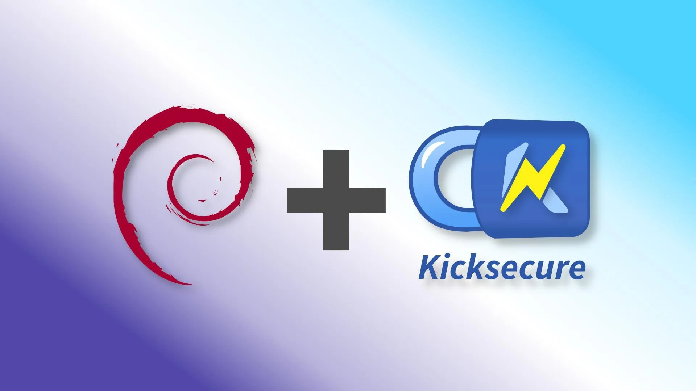

We believe security software like Kicksecure needs to remain Open Source and independent. Would you help sustain and grow the project? Learn more about our 11 year success story and maybe DONATE!
USB InstallationDocumentationVirtualBoxPrevious page: USB InstallationIndex page: DocumentationNext page: VirtualBoxInstall Kicksecure inside Debian

An existing Debian version 13 (codename:
trixie) installation can be converted into Kicksecure by installing a Kicksecure deb package.
This procedure is also called distro-morphing.
Introduction
There are different options to install Kicksecure. Two options. Choose one.
- A) (Easier) Download: Use the ISO or a different installation option from the Download page. In that case, you can stop reading this wiki page. or
- B) (Advanced) Distribution morphing method: See below.
Distribution Morphing Introduction
To increase the chances of success, it is best to start with a minimal Debian installation either,
- A) Debian graphical user interface (GUI) (LXQt); or
- B) Debian command line interface (CLI)
and then install a Kicksecure meta package as documented below.
It is easiest to set the Linux user account name to user
during the installation of Debian trixie.
Debian Live sessions: Distribution morphing a Debian Live ISO is unnecessary and unsupported. Use Kicksecure ISO instead. [1]
Warnings
- SSH configuration: In Kicksecure 18 and higher, SSH client and server configuration will be hardened when morphing Debian to Kicksecure. Among other things, this will prevent the use of insecure cryptography and login methods. If morphing a system that is running an SSH server, the system may no longer be accessible over SSH after morphing due to the modified configuration. Arrange for some other means of accessing the machine for reconfiguration if this is a problem.
Distribution Morphing versus ISO - Differences
There are some specifics about distro-morphing which the user should be aware.
- No creation of usable accounts for the user:
Neither Linux user account
usernorsysmaintwill be created. [2] The user can continue to use their already existing user account(s). - No default user-sysmaint-split: Is not installed by
default but can later be installed by the user according to
user-sysmaint-splitdocumentation. - No password changes: No passwords for any already
existing user accounts will be modified. The user can continue to use
their already existing passwords. This means passwords for Full Disk Encryption
(pre-boot authentication),
sudo,su, Login, etc. will remain the same. - No root account locking: The password of the root account will not be locked. The user can manually Disable Root Account for better security.
- No user account settings changes: Any user account settings will remain unchanged.
- No user account shell changes: The user's default shell will remain the same.
- Autologin: Autologin will not be enabled by default. Autologin can be enabled with autologinchange.
- Swap / mount / fstab related: Swap partition / swap
files, mounts,
/etc/fstabset up by Debian installer or the user are not disabled or modified during distribution morphing. This might be a concern for users interested in non-persistent live mode. - Desktop environment related: For GNOME, KDE, Xfce, LXDE, and any desktop environment other than the current desktop environment Kicksecure is based on (which is LXQt at the time of writing), see Other Desktop Environments.
- tirdad
Prerequisites
1 Essentials.
The user needs to verify that the following prerequisites are met.
- Operating system: Debian
trixieis installed. - User account: A Linux user account exists, for example
user. - Recommended username: Using the account name
useris recommended so the commands below can be copy-pasted without modification.
2 Gain administrative (root) rights. [3]
Becoming root is required because the following commands need to be run with administrative (root) rights as documented below. [4]
- A) Debian: Use
suorsudo suas documented below. - B) Most Qubes users: same as above.
- C) Advanced Qubes users: If using a Debian
minimal template or not having the
passwordless-rootpackage installed, see footnote. [5]
Try to become root by running the following command in a terminal.
su
Executing plain su might not be possible depending on
how Debian has been installed. [6] In that case, try.
sudo su
3
Install sudo and adduser package.
1 Update the package lists.
apt update
2 Upgrade the system.
apt full-upgrade
3
Install sudo and adduser package.
apt install --no-install-recommends sudo adduser
4 Root rights hardening notice.
Note:
- A) Most users: No special notice.
- B) Advanced users: If the user is intending
to lock down account
userby not granting root rights, see footnote. [7]
5 sudo configuration.
Allow account user to run sudo without a
password.
Optional.
Select a method.
Note: Replace account user with your actual user
name.
Configuration File Method
Securely create file /etc/sudoers.d/user.conf using
visudo.
echo "user ALL=(ALL:ALL) NOPASSWD:ALL" | EDITOR=tee visudo -f /etc/sudoers.d/nopassword >/dev/null
Adduser Method
Add account user to group sudo.
/usr/sbin/adduser user sudo
Reboot required.
/sbin/reboot
Gain administrative rights after reboot. Same as in step 2.
6
Create group console.
/usr/sbin/addgroup --system console
7
Add your Linux account user name to group console.
[8]
Note: Replace account user with your actual user
name.
/usr/sbin/adduser user console
8 Install console related packages.
Note: This might also result in removal of
plymouth, which is good, because it is unsupported.
[9]
sudo apt install console-data console-common kbd keyboard-configuration
Installation
Add the Kicksecure Repository
There are two different options to enable the Kicksecure APT repository. Choose one. [10]
1
extrepo setup.
1
Install package extrepo.
sudo apt install extrepo
2
Open file /etc/extrepo/config.yaml in an editor with
administrative ("root")
rights.
1 Select your platform.

2 Notes.
- Sudoedit guidance: See Open File
with Root Rights for details on why using
sudoeditimproves security and how to use it. - Editor requirement: Close Featherpad (or the chosen text
editor) before running the
sudoeditcommand.
3 Open the file with root rights.
sudoedit /etc/extrepo/config.yaml

2 Notes.
- Sudoedit guidance: See Open File
with Root Rights for details on why using
sudoeditimproves security and how to use it. - Editor requirement: Close Featherpad (or the chosen text
editor) before running the
sudoeditcommand. - Template requirement: When using Kicksecure-Qubes, this must be done inside the Template.
3 Open the file with root rights.
sudoedit /etc/extrepo/config.yaml
4 Notes.
- Shut down Template: After applying this change, shut down the Template.
- Restart App Qubes: All App Qubes based on the Template need to be restarted if they were already running.
- Qubes persistence: See also Qubes Persistence
- General procedure: This is a general procedure required for Qubes and is unspecific to Kicksecure-Qubes.

2 Notes.
- Example only: This is just an example. Other tools could achieve the same goal.
- Troubleshooting and alternatives: If this example does not work for you, or if you are not using Kicksecure, please refer to Open File with Root Rights.
3 Open the file with root rights.
sudoedit /etc/extrepo/config.yaml
3 Paste at the end.
- contrib - non-free
2
Enable the stable kicksecure APT repository. (See footnote
for other options.) [12]

Kicksecure
sudo extrepo enable kicksecure

Kicksecure-Qubes Template (kicksecure-18)
sudo http_proxy=http://127.0.0.1:8082 https_proxy=http://127.0.0.1:8082 extrepo enable kicksecure
3 Advanced options.
For advanced options such as clearnet over Tor or onion. [13]
Please press expand on the right side.
Optional.
Install apt-transport-tor and tor.
Install package(s) apt-transport-tor tor following these
instructions:
1 Platform specific notice.
- Kicksecure: No special notice.
- Kicksecure-Qubes: In Template.
2 Update the package lists and upgrade the system.
sudo apt update && sudo apt full-upgrade
3
Install the apt-transport-tor tor package(s).
Using apt command line --no-install-recommends option is in
most cases optional.
sudo apt install --no-install-recommends apt-transport-tor tor
4 Platform specific notice.
- Kicksecure: No special notice.
- Kicksecure-Qubes: Shut down Template and restart App Qubes based on it as per Qubes Template Modification.
5 Done.
The procedure of installing package(s)
apt-transport-tor tor is complete.
Find out the filename.
ls -la /etc/apt/sources.list.d/extrepo_*
Note: The filename will be different if using a repository other than the stable repository such as the testers repository.
Open file
/etc/apt/sources.list.d/extrepo_kicksecure.sources in an
editor with administrative ("root") rights.
1 Select your platform.

2 Notes.
- Sudoedit guidance: See Open File
with Root Rights for details on why using
sudoeditimproves security and how to use it. - Editor requirement: Close Featherpad (or the chosen text
editor) before running the
sudoeditcommand.
3 Open the file with root rights.
sudoedit /etc/apt/sources.list.d/extrepo_kicksecure.sources

2 Notes.
- Sudoedit guidance: See Open File
with Root Rights for details on why using
sudoeditimproves security and how to use it. - Editor requirement: Close Featherpad (or the chosen text
editor) before running the
sudoeditcommand. - Template requirement: When using Kicksecure-Qubes, this must be done inside the Template.
3 Open the file with root rights.
sudoedit /etc/apt/sources.list.d/extrepo_kicksecure.sources
4 Notes.
- Shut down Template: After applying this change, shut down the Template.
- Restart App Qubes: All App Qubes based on the Template need to be restarted if they were already running.
- Qubes persistence: See also Qubes Persistence
- General procedure: This is a general procedure required for Qubes and is unspecific to Kicksecure-Qubes.

2 Notes.
- Example only: This is just an example. Other tools could achieve the same goal.
- Troubleshooting and alternatives: If this example does not work for you, or if you are not using Kicksecure, please refer to Open File with Root Rights.
3 Open the file with root rights.
sudoedit /etc/apt/sources.list.d/extrepo_kicksecure.sources
Choose either option A) or B).
- A) Clearnet over Tor Repository: To enable
clearnet over Tor,
tor+needs to be prepended in front ofhttps. In other words, look for Uris: https and replace it with Uris: tor+https . - B) Onion Repository: To enable onion, look
for the line starting with
Uris:. Delete the whole line. Or comment it out by adding a hash ("#") in front of it. Then add a new line: Uris: tor+http://deb.w5j6stm77zs6652pgsij4awcjeel3eco7kvipheu6mtr623eyyehj4yd.onion
4 Done.
The Kicksecure APT repository has been enabled.[14]
Add Signing Key
Complete the following steps to add the Kicksecure Signing Key to the system's APT keyring.
Open a terminal.
1
Package curl needs to be installed.
Install package(s) curl following these
instructions:
1 Platform specific notice.
- Kicksecure: No special notice.
- Kicksecure-Qubes: In Template.
2 Update the package lists and upgrade the system.
sudo apt update && sudo apt full-upgrade
3
Install the curl package(s).
Using apt command line --no-install-recommends option is in
most cases optional.
sudo apt install --no-install-recommends curl
4 Platform specific notice.
- Kicksecure: No special notice.
- Kicksecure-Qubes: Shut down Template and restart App Qubes based on it as per Qubes Template Modification.
5 Done.
The procedure of installing package(s) curl is
complete.
2 Download Kicksecure Signing Key. [15]
Choose your operating system.

If you are using Debian, run.
Choose TLS or onion.

TLS (Debian)
TLS.
sudo curl --tlsv1.3 --output /usr/share/keyrings/derivative.asc --url https://www.kicksecure.com/keys/derivative.asc

onion (Debian)
Note: Downloading over onion requires an already functional system Tor.
sudo curl --proxy socks5h://127.0.0.1:9050 --output /usr/share/keyrings/derivative.asc --url http://www.w5j6stm77zs6652pgsij4awcjeel3eco7kvipheu6mtr623eyyehj4yd.onion/keys/derivative.asc

If you are using a Qubes Debian App Qube, run.
Choose TLS or onion.

TLS (Qubes-App-Qube)
TLS.
sudo curl --tlsv1.3 --output /usr/share/keyrings/derivative.asc --url https://www.kicksecure.com/keys/derivative.asc
onion (Qubes-App-Qube)
Note: Downloading over onion requires an already functional system Tor.
sudo curl --proxy socks5h://127.0.0.1:9050 --output /usr/share/keyrings/derivative.asc --url http://www.w5j6stm77zs6652pgsij4awcjeel3eco7kvipheu6mtr623eyyehj4yd.onion/keys/derivative.asc

If you are using a Qubes Debian Template, run.
Choose TLS or onion.

TLS (Qubes-Template)
TLS.
sudo http_proxy=http://127.0.0.1:8082 https_proxy=http://127.0.0.1:8082 curl --tlsv1.3 --output /usr/share/keyrings/derivative.asc --url https://www.kicksecure.com/keys/derivative.asc
onion (Qubes-Template)
Note: Downloading over onion requires an already functional system Tor.
sudo http_proxy=http://127.0.0.1:8082 https_proxy=http://127.0.0.1:8082 curl --output /usr/share/keyrings/derivative.asc --url http://www.w5j6stm77zs6652pgsij4awcjeel3eco7kvipheu6mtr623eyyehj4yd.onion/keys/derivative.asc
3 Signing key verification.
Optional. Recommended for Advanced Users only. If you have a good understanding of Verifying Software Signatures you can check the Kicksecure Signing Key for additional security.
4 Done.
The procedure of adding the Kicksecure signing key is now complete.
Add Repository
Add the Kicksecure APT Repository.
Choose exactly one option: Option A, Option B OR Option C.
Option A: Add the Kicksecure Onion repository.
This option configures APT to access the Kicksecure repository via an onion service for maximum network anonymity.
To add the Kicksecure repository over Onion, first install
apt-transport-tor and tor from the Debian
repository.
sudo apt install apt-transport-tor tor
Add the Kicksecure
APT repository for the default Kicksecure setup using Debian
stable. At the
time of writing, this was trixie.
echo "Types: deb URIs: tor+http://deb.w5j6stm77zs6652pgsij4awcjeel3eco7kvipheu6mtr623eyyehj4yd.onion Suites: trixie Components: main contrib non-free Enabled: yes Signed-By: /usr/share/keyrings/derivative.asc" | sudo tee /etc/apt/sources.list.d/derivative.sources

Option B: Add the Kicksecure clearnet repository via Tor.
This option accesses the clearnet repository but routes all traffic through Tor.
To add the Kicksecure repository over torified clearnet, install
apt-transport-tor from the Debian repository.
sudo apt install apt-transport-tor
Add the Kicksecure APT repository for the default Kicksecure setup
using Debian stable. At the time of writing, this was
trixie.
echo "Types: deb URIs: tor+https://deb.kicksecure.com Suites: trixie Components: main contrib non-free Enabled: yes Signed-By: /usr/share/keyrings/derivative.asc" | sudo tee /etc/apt/sources.list.d/derivative.sources

Option C: Add the Kicksecure clearnet repository over clearnet.
This option uses a direct clearnet connection without Tor.
Note: When later using the Kicksecure repository tool, this configuration will be upgraded to "Clearnet Rep. via Tor", unless noted otherwise. [16]
To add the Kicksecure repository over clearnet, add the Kicksecure
APT repository for the default Kicksecure setup using Debian stable. At
the time of writing, this was trixie.
echo "Types: deb URIs: https://deb.kicksecure.com Suites: trixie Components: main contrib non-free Enabled: yes Signed-By: /usr/share/keyrings/derivative.asc" | sudo tee /etc/apt/sources.list.d/derivative.sources
The procedure for adding the Kicksecure APT repository is now complete.
Install the Kicksecure Package
GUI: Installs the LXQt graphical desktop environment (graphical user interface (GUI)), default applications and command line interface (CLI). This is useful if Debian was installed without a graphical desktop environment and you want the Kicksecure graphical desktop environment (LXQt).
CLI: This does not change your graphical desktop environment. This package provides better kernel hardening, improved entropy, and other security features.
1 Update your package lists.
sudo apt update
2 Install a Kicksecure meta package.
Select a version.

GUI version

GUI for host operating systems
sudo apt install --no-install-recommends kicksecure-baremetal-gui-lxqt

GUI for Qubes users
sudo apt install --no-install-recommends kicksecure-qubes-gui-lxqt
GUI for other VMs (not Qubes)
sudo apt install --no-install-recommends kicksecure-vm-gui-lxqt

CLI version

CLI for host operating systems
sudo apt install --no-install-recommends kicksecure-baremetal-cli

CLI for Qubes users
 Warning: This is for testers-only!
Warning: This is for testers-only!
sudo apt install --no-install-recommends kicksecure-qubes-cli
CLI for other VMs (not Qubes)
sudo apt install --no-install-recommends kicksecure-vm-cli
Server version
Server for host operating systems
sudo apt install --no-install-recommends kicksecure-baremetal-server

Server for Qubes users
 Warning: This is for testers-only!
Warning: This is for testers-only!
sudo apt install --no-install-recommends kicksecure-qubes-server
Server for other VMs (not Qubes)
sudo apt install --no-install-recommends kicksecure-vm-server
3 Troubleshooting (optional).
Only if you run into issues, see the footnote. [17] Otherwise, proceed to the next step.
4 Next.
Install mokutil
mokutil is a utility for managing Machine Owner Keys.
These keys are used to allow non-mainline kernel modules to work even if
Secure Boot is enabled. The mokutil package in Debian is
not available for all CPU architectures, and thus cannot be depended
upon by Kicksecure's packages. It has to be installed separately.
Notes:
- If the installation fails with the message
Error: Unable to locate package mokutil, it is most likely not available for your system's CPU architecture. You may skip installingmokutilif this is the case. - See also Secure Boot.
Install package(s) mokutil following these
instructions:
1 Platform specific notice.
- Kicksecure: No special notice.
- Kicksecure-Qubes: In Template.
2 Update the package lists and upgrade the system.
sudo apt update && sudo apt full-upgrade
3
Install the mokutil package(s).
Using apt command line --no-install-recommends option is in
most cases optional.
sudo apt install --no-install-recommends mokutil
4 Platform specific notice.
- Kicksecure: No special notice.
- Kicksecure-Qubes: Shut down Template and restart App Qubes based on it as per Qubes Template Modification.
5 Done.
The procedure of installing package(s) mokutil is
complete.
Install tirdad
tirdad is a
Linux kernel module that increases the system's security when using TCP
network connections. It randomizes TCP Initial Sequence Numbers (ISNs)
to prevent data leakage. Installing tirdad will install a
Linux kernel, which is undesirable in containers, so therefore
tirdad cannot be depended upon by Kicksecure's
metapackages. It has to be installed separately.
Notes:
- Optional. If you are installing Kicksecure into a container, you may skip this step.
Install package(s) tirdad following these
instructions:
1 Platform specific notice.
- Kicksecure: No special notice.
- Kicksecure-Qubes: In Template.
2 Update the package lists and upgrade the system.
sudo apt update && sudo apt full-upgrade
3
Install the tirdad package(s).
Using apt command line --no-install-recommends option is in
most cases optional.
sudo apt install --no-install-recommends tirdad
4 Platform specific notice.
- Kicksecure: No special notice.
- Kicksecure-Qubes: Shut down Template and restart App Qubes based on it as per Qubes Template Modification.
5 Done.
The procedure of installing package(s) tirdad is
complete.
Post-Installation
1
Enable the /etc/apt/sources.list.d/derivative.sources
Kicksecure APT repository.
Can be done using the Kicksecure repository tool.
Two options. Choose one. Either using,
- A) CLI: sudo repository-dist --enable --repository stable , or
- B) GUI:
Start Menu→System→Derivative Repository→choose either "Stable", "Stable Proposed Updates", "Testers", or "Developers" repository
See the tool's wiki page for more detailed documentation if needed.
2
Disable the extrepo kicksecure APT repository.
Only needed in case the user has chosen the extrepo signing key adding method above.
This is to avoid a duplicate Kicksecure repository.
sudo extrepo disable kicksecure
3 Check APT sources.
Check if some APT sources in /etc/apt/sources.list
should be kept.
Move the original /etc/apt/sources.list file out of the
way (or delete it) because it is replaced by Kicksecure's
/etc/apt/sources.list.d/debian.sources.
sudo mv /etc/apt/sources.list ~/
4
Create an empty /etc/apt/sources.list file.
sudo touch /etc/apt/sources.list
5
Add your Linux account user name to group privleap.
Note: Replace account user with your actual user
name.
sudo /usr/sbin/adduser user privleap
6 Optional: Set the onionized Debian repositories.
If onion repository sources are preferred, follow these [Broken-ExtLink--no-url-was-provided].
7 Done.
The Kicksecure installation is complete.
Footnotes
- Debian Live ISO (live session) is unnecessary and unsupported. Reasons: * All changes will be lost on reboot. * We already offer a live Kicksecure ISO. * None of the security-misc kernel hardening options will be enabled, and they can't be enabled, because that would require a reboot which will discard everything. * permission-hardener doesn't expect anything under /usr to be read-only. Use Kicksecure ISO instead.
 Kicksecure/dist-base-files
Kicksecure/dist-base-files- Use any method to gain administrative (root) rights. Gain root one way or another.
- When a user is using
suto gain administrative rights, the user is required to use full path to the programsaddgroup,adduser,rebootbecause when usingsuthePATHenvironment variable is not adjusted for use with root rights. Seeecho "$PATH". echo "$PATH" user rightsPATHprintout:/usr/local/bin:/usr/bin:/bin:/usr/local/games:/usr/gamesroot rights
PATHprintout:/usr/local/sbin:/usr/local/bin:/usr/sbin:/usr/bin:/sbin:/binBy comparison, when using
sudousing /full/path/to/application is not required. - A root terminal is required to proceed which can be started from Qubes dom0 terminal as per the Qubes upstream documentation. Unspecific to Kicksecure.
- If a root password has not been configured during Debian
installation, Debian-Installer might have already set up
sudo. - The following command
/usr/sbin/adduser user sudogrants root rights to accountuser. If the user intends to use accountuserwithout root rights for better security, the user should omit running the/usr/sbin/adduser user sudoand instead 1) make sure that another Linux user account such as usersysmaintis a member of Linux user groupsudoand 2) adhere to the following platform specific instructions. * Debian: Usesu. * Kicksecure for Qubes: If not installing thepasswordless-rootpackage and/or when distribution morphing a Debian minimal template into Kicksecure, root terminal is required to proceed which can be started from Qubes dom0 terminal as per the Qubes upstream documentation. Unspecific to Kicksecure. - Context: Console Lockdown Required for login into a Virtual Consoles which might be handy in context of Recovery.
- https://forums.kicksecure.com/t/error-plymouth-conflict-in-debian-morphing/641
extrepovs manual: * Usability: ** There are some detail usability differences. Using onion connection might be easier with manual method until Kicksecure gets ported to Debian13/trixiebecauseextrepomight get onion support then. ** Apart from that,extrepo's usability seems generally better. * Security: ** A detailed comparative research of both methods is unavailable. ** If usability is considered a security feature, thenextrepomight be considered more secure. This is because users do not have to learn as much about Verifying Software Signatures, OpenPGP, its many Software Signature Verification Usability Issues. Debian which is already trusted by the user providing a trust path to the Kicksecure signing key. Manual key fingerprint verification not required. ** Theextrepoproject is a huge amount of work adding all the signing keys for many different projects. The code for securely downloading a signing key in the Python is not among the most difficult programming tasks to get correct. Compared withcurl(written in C), it might be more secure. * Keeping support for manual method: ** Removal of the manual method is not planned. Since already written, the maintenance effort for that very part of documentation is low. In caseextreposigning key is outdated, get deprecated, it's easy to switch back to manual method.- The following comments in that file...
# - contrib # - non-free...could be deleted, but that is completely optional.
stable-proposed-updatesrepository: sudo extrepo enable kicksecure_proposedtestersrepository: sudo extrepo enable kicksecure_testersdevelopersrepository: sudo extrepo enable kicksecure_developers- extrepo feature request: extrepo apt-transport-tor and onion support
- forum discussion: extrepo - safely adding repos
- See Secure Downloads
to understand why
curland the parameters--tlsv1.3are used instead ofwget.
Placing an additional signing key into folder/usr/share/keyringsby itself alone has no impact on security as this folder is not automatically used by Debian's APT by default. Only when an APT sources list configuration file points to folder/usr/share/keyringsusing thesigned-bykeyword the signing key will be actually used. Therefore deleting keys in/usr/share/keyringsis optional if intending to disable an APT repository. See also APT Signing Key Folders. - Unless using
repository-dist --transport plain-tls. See alsoman repository-dist. - If
aptreturns an error aboutconsole-commonwhen installing the Kicksecure package, installconsole-commonfirst:sudo apt install console-commonThen try installing the Kicksecure package again. Meta package installation has been completed. Please proceed with the post-installation steps below.
Categories: Documentation